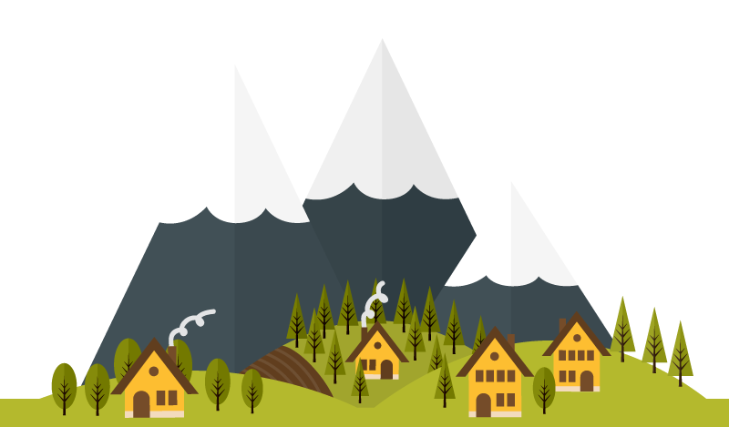
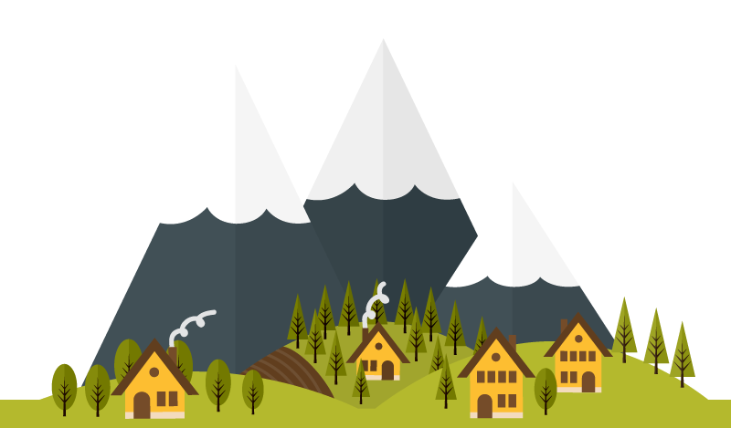
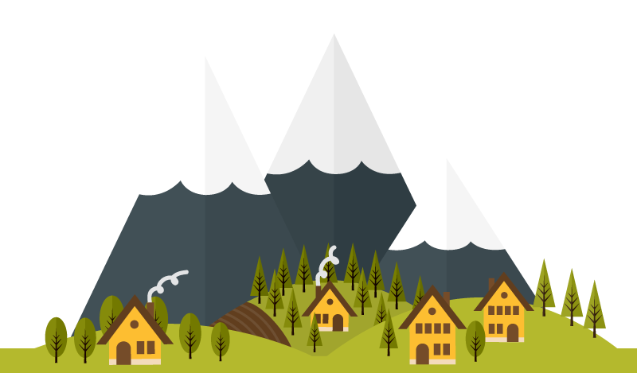
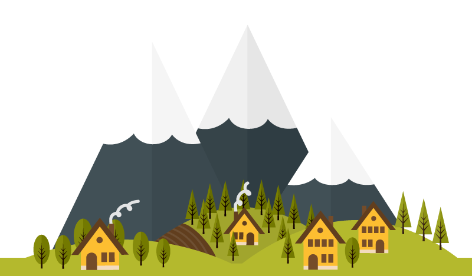

I am Rafi
a Web Development
 

 

I am 22 years old, Place of birth date is Madiun, May 2, 1999, Healthy and have taken the Covid 19 vaccine for 1 & 2 Graduated majoring in Electrical Automation Engineering Sepuluh Nopember Institute of Technology Surabaya (ITS Surabaya).

Early in my career in 2019, I did an internship at PT Indolakto and held several projects including the utility checklist project, the utility checklist project aims to change the checking system in the utility room. At first the checking was still using paper, then with this project a website dashboard was made. From here, I started making websites without using frameworks. while the next experience I followed the Web Development Bootcamp on udemy.

Experience for web design following web development bootcamp training, the result of the web development bootcamp training is this website that I created and several other websites.